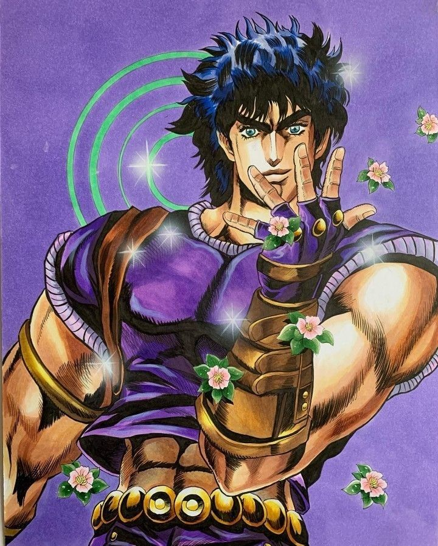
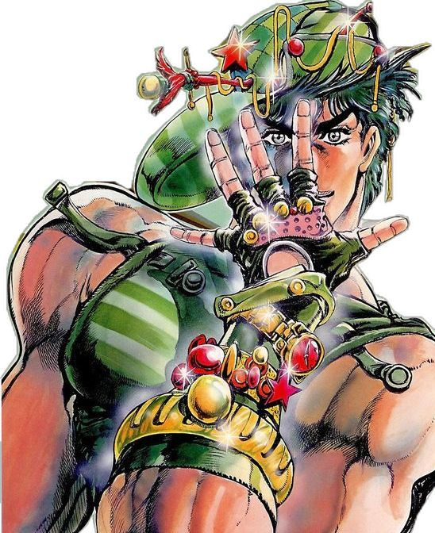
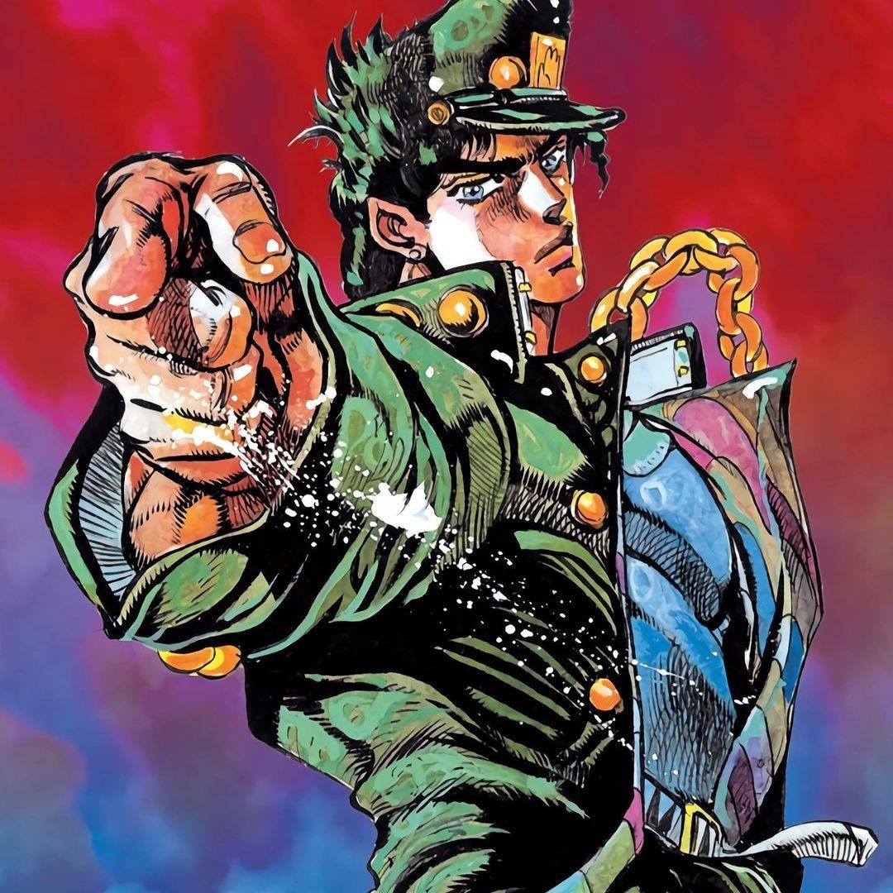
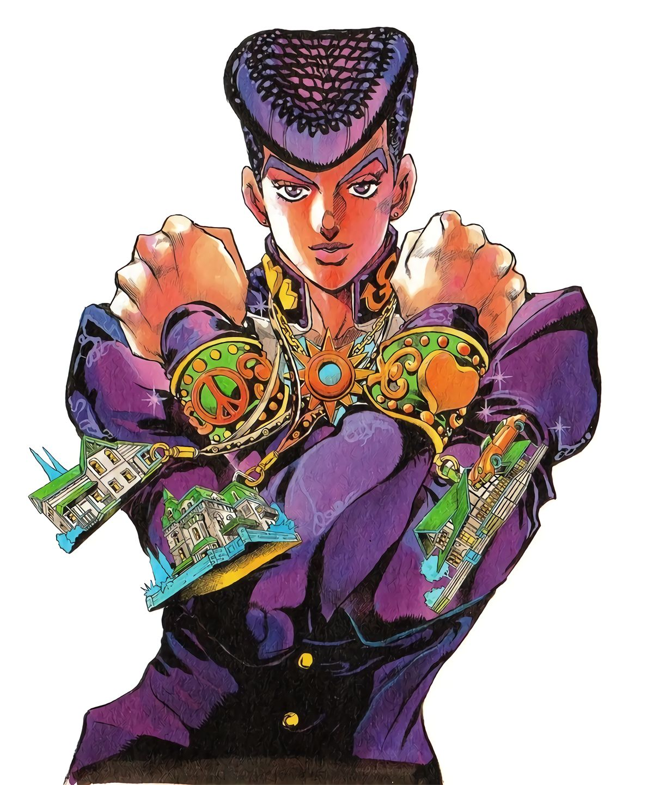
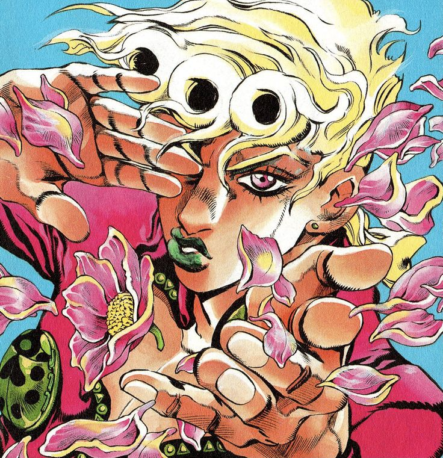
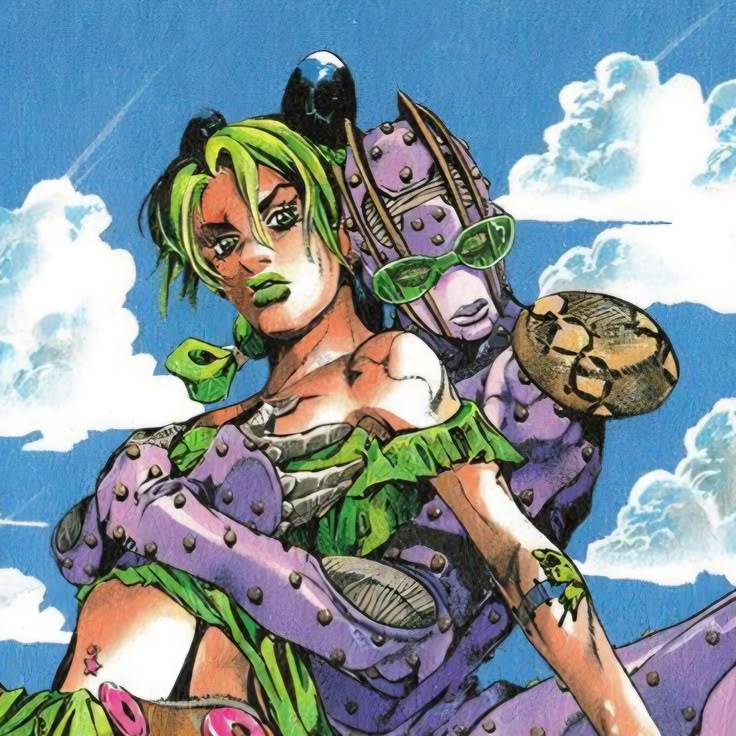
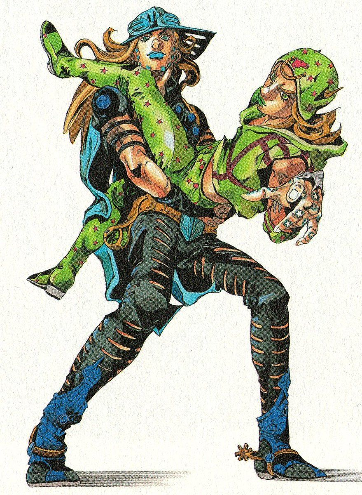
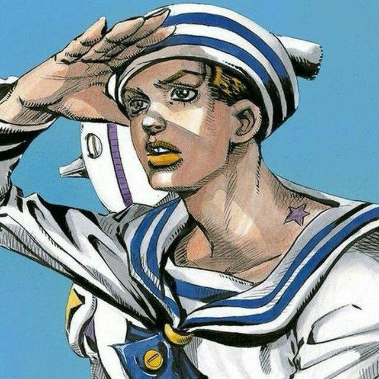
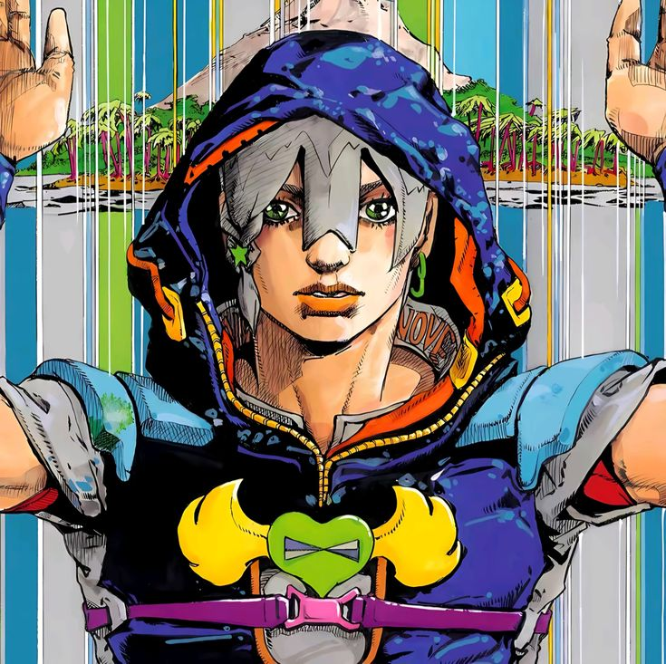
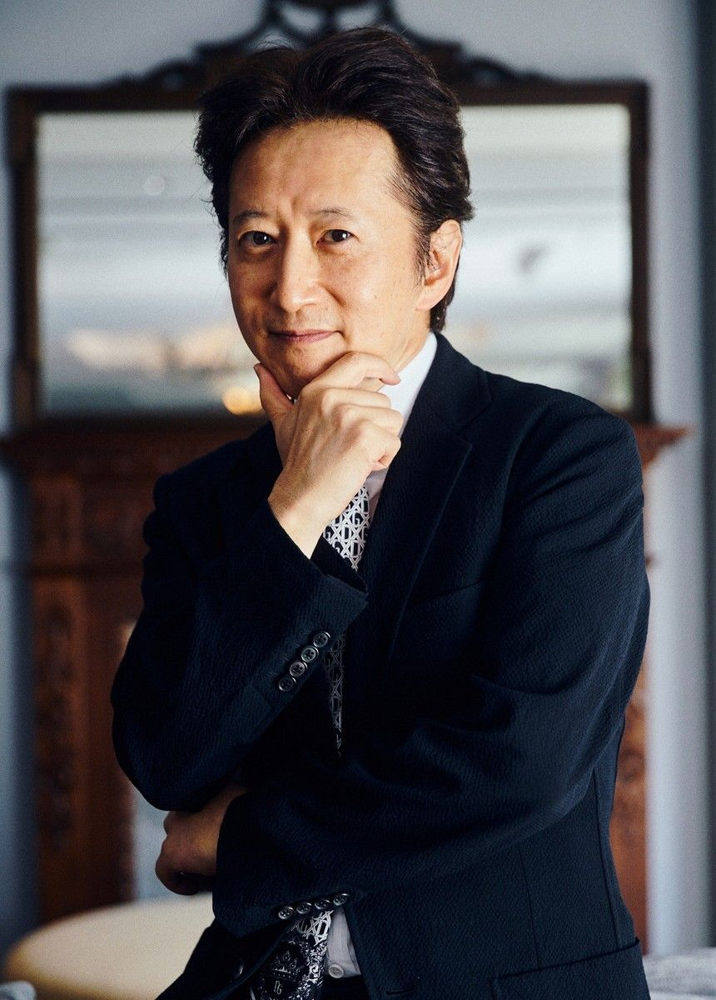

JoJo's Bizarre Adventure es un manga japonés creado por Hirohiko Araki. Su publicación comenzó en 1986 y la obra se caracteriza por contar diferentes historias relacionadas con la familia Joestar. A diferencia de muchas series, JoJo no sigue siempre al mismo protagonista. Cada parte presenta una nueva generación o etapa de la historia, con nuevos escenarios, conflictos y formas de enfrentar a los enemigos. La obra combina acción, aventura, humor, drama y elementos sobrenaturales. También es reconocida por su particular estilo artístico, sus poses exageradas, sus diseños llamativos y la creatividad de sus poderes. A lo largo de sus diferentes partes, la historia lleva a los lectores por distintos lugares y épocas, haciendo que cada etapa tenga una identidad propia.
El universo de JoJo's Bizarre Adventure está construido alrededor de las aventuras de diferentes integrantes de la familia Joestar. Aunque cada parte tiene una historia diferente, existen conexiones entre ellas. Los acontecimientos de una generación pueden influir en las siguientes, creando una historia que se extiende a través de décadas. Uno de los elementos más importantes de la obra es que cada parte tiene su propio estilo. Algunas historias se desarrollan principalmente alrededor de viajes, otras en ciudades, otras en grandes enfrentamientos o situaciones sobrenaturales. También cambia la forma en la que los protagonistas enfrentan los problemas. Por eso, cada parte puede sentirse diferente de la anterior aunque todas formen parte de la misma obra.

Phantom Blood es la primera parte de JoJo's Bizarre Adventure. La historia se desarrolla principalmente en Inglaterra durante el siglo XIX y presenta el comienzo del conflicto que marcará gran parte de la obra. Esta parte establece varios elementos fundamentales del universo de JoJo y presenta el origen de una rivalidad que tendrá consecuencias a lo largo de la historia. Ambientación: Inglaterra, siglo XIX. Tema principal: el comienzo del conflicto entre el bien y el mal.

Battle Tendency continúa la historia varias décadas después de los acontecimientos de la primera parte. La aventura se desarrolla en diferentes lugares y combina combates, viajes, entrenamiento y situaciones sobrenaturales. Esta parte también amplía el universo de JoJo y presenta nuevas amenazas. Ambientación: diferentes lugares del mundo durante la década de 1930. Tema principal: aventura, estrategia y enfrentamientos sobrenaturales.

Stardust Crusaders es una de las partes más conocidas de la obra. La historia se desarrolla como un largo viaje a través de diferentes países. Durante este recorrido aparecen los Stands, una nueva forma de poder que se convierte en uno de los elementos fundamentales de JoJo. Ambientación: principalmente Japón, Medio Oriente y Egipto. Tema principal: un viaje lleno de enfrentamientos y obstáculos.

Diamond Is Unbreakable cambia el enfoque de las partes anteriores. La historia se desarrolla principalmente en una ciudad japonesa ficticia llamada Morioh. En lugar de centrarse principalmente en un largo viaje, la historia se concentra en los acontecimientos que ocurren dentro de la ciudad y en los misterios que aparecen en ella. Ambientación: Morioh, Japón. Tema principal: vida cotidiana, misterio y fenómenos sobrenaturales.

Golden Wind, también conocida como Vento Aureo, se desarrolla principalmente en Italia. La historia gira alrededor del mundo del crimen organizado y de una serie de objetivos relacionados con el futuro de una organización. Esta parte presenta nuevos lugares, enfrentamientos y una estética fuertemente relacionada con la cultura italiana. Ambientación: Italia. Tema principal: crimen organizado, ambición y búsqueda de un objetivo.

Stone Ocean es la sexta parte de la obra y se desarrolla principalmente en Estados Unidos. La historia cambia nuevamente el escenario y presenta una situación en la que los protagonistas deben enfrentarse a diferentes obstáculos dentro de una prisión. Ambientación: Estados Unidos. Tema principal: libertad, determinación y enfrentamientos sobrenaturales.

Steel Ball Run comienza una nueva etapa dentro de la obra y presenta una historia ambientada en Estados Unidos durante el siglo XIX. La trama gira alrededor de una enorme carrera a través del país. Sin embargo, detrás de la competencia existe una historia mucho más compleja. Ambientación: Estados Unidos, siglo XIX. Tema principal: carrera, aventura y competencia.

JoJolion se desarrolla nuevamente en Morioh, aunque en una continuidad diferente a la de las primeras partes. La historia tiene un fuerte componente de misterio y presenta preguntas relacionadas con la identidad, los acontecimientos extraños y los secretos de la ciudad. Ambientación: Morioh, Japón. Tema principal: misterio, identidad y fenómenos sobrenaturales.

The JOJOLands es la novena parte de JoJo's Bizarre Adventure y forma parte de la continuidad iniciada con las partes séptima y octava. La historia se desarrolla en Hawái y presenta una nueva aventura con un enfoque diferente a las partes anteriores. Ambientación: Hawái. Tema principal: aventura, ambición y situaciones misteriosas. Historia actualmente en desarrollo
El Hamon, también llamado Ripple, es una técnica basada en el control de una energía producida mediante la respiración. Su utilización requiere entrenamiento y control corporal. En las primeras partes de JoJo tiene un papel fundamental en los enfrentamientos contra determinadas amenazas sobrenaturales.
Los Stands son manifestaciones de energía asociadas a una persona y poseen diferentes habilidades. Aparecen por primera vez como elemento central en Stardust Crusaders y posteriormente se convierten en una característica fundamental de JoJo. Cada Stand tiene habilidades diferentes. Algunos pueden estar orientados al combate, mientras que otros pueden tener capacidades relacionadas con el espacio, el tiempo, objetos, información o situaciones muy específicas. Una característica importante es que las peleas entre usuarios de Stands no dependen únicamente de la fuerza. Muchas veces es necesario descubrir cómo funciona la habilidad del rival y encontrar una estrategia para derrotarlo.
El Spin es una técnica basada en el movimiento giratorio y tiene una importancia especial en las partes más recientes de la obra. Su utilización requiere comprender y controlar el movimiento de manera precisa. El concepto del Spin permite utilizar la rotación de diferentes maneras durante los enfrentamientos.

Hirohiko Araki es el creador y autor de JoJo's Bizarre Adventure. Nació en Japón en 1960 y comenzó su carrera como mangaka antes de crear JoJo. La primera parte de la obra, Phantom Blood, comenzó a publicarse en 1986. Uno de los aspectos más reconocibles de su trabajo es su estilo artístico. Sus ilustraciones utilizan figuras humanas estilizadas, poses exageradas, diseños llamativos y una fuerte atención a la moda. Araki también ha incorporado diferentes influencias artísticas y culturales a JoJo, incluyendo elementos de la música, la moda, el arte y diferentes lugares del mundo. Su trabajo convirtió a JoJo en una obra reconocible por tener una identidad visual muy particular.